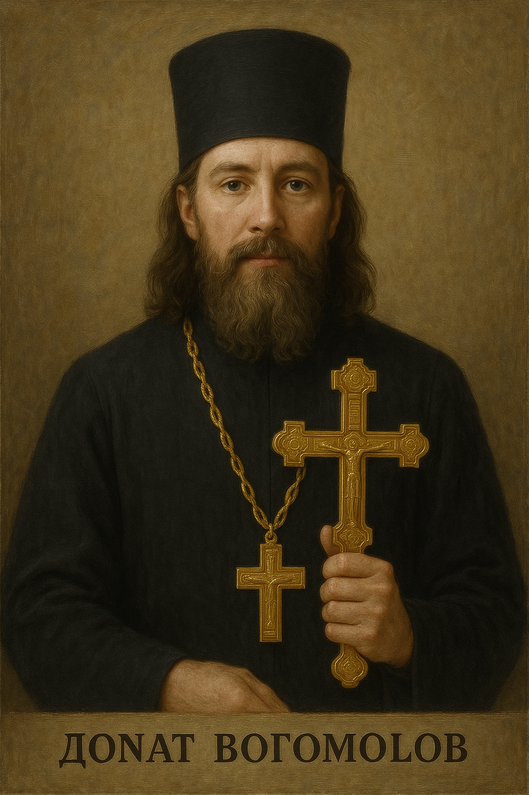

Готовить
Как же я классно делаю кутью!
Я думаю, что это самое вкусное блюдо в мире, зерна пшеницы,
с добавлением мёда это очень вкусно!
Почему нравится:
Нравится не нравится - терпи моя красавица
Не буду готовить - помру с голоду
Проведение церковных обрядов
Обряды помогают верующим углубить свою веру
воспитывают их духовно и укрепляют связь с Богом и Церковью
Открывают путь к общению с Богом
Почему нравится:
Чувствую связь с вечной традицией и ощущаю,
что служу чему-то большему, чем себя.
Читать прикольные цитаты
Цитаты - очень смешные высказывания различных людей,
которые быстро снимают напряжение.
Почему нравится:
Прикольные цитаты заставляют меня улыбаться каждый серый
осенний день.
"Добрым словом и пистолетом вы можете добиться гораздо большего,
чем одним только добрым словом."
— Аль Капоне